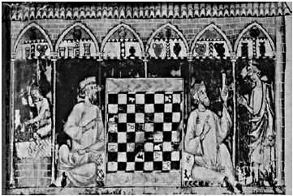

ŞEKİL 33. 13. yüzyıl İspanyol eczanesi: Tüm Ortaçağ minyatürleri içinde bu resim, erken eczacı kaplarının biçimsel zenginliğinin en güzel görünümünü verendir. Altı adet kemerin altında 22 kap görülmekte, bunlar arasında şişeler, albarellolar, amforalar, testiler, ahşap kutular, vazo şeklinde, şişkin karınlı ve silindirik ecza çömlekleri yer almaktadır. Kapların hemen hemen hepsi boyalıdır. Sağ tarafta yere oturmuş haldeki hekim idrar gözlemi yaparken en sol taraftaki çırak, iki kulplu basit bir Mağrip tipi havan içinde her iki elindeki birer havaneli ile çalışmaktadır. Eczane taş duvarla çevrili olup çatısı kiremitle kaplıdır. Ortada yer alan satranç tahtasının eczane ile bir ilgisi yoktur. Bu elyazması satranç oyunu ile ilgili olduğundan resmin tam ortasında bu sahneye yer verilmiştir [“Bilge” (el Sabio) Alfonso (1221-1284), Libro de ajedrez, dados y tablas, 1283, Biblioteca de El-Escorial, Madrid).42
İtalyan fayansları özellikle çok renkli olarak boyanmış olup hem genel kullanımlı çömlekler hem de özelde basit eczaların (“simplicia”) ve karışım eczaların (“composita”) konacağı kaplar olarak ticarette kullanım alanı bulmuştur. İtalyan fayanslarının benzerleri 1530’larda Nürnberg’de, 1600’lerde ise Anvers’de taklit edilmiştir. Anvers çömlekçi ürünleri beyaz zemin üzerine kobalt mavisi süslemeler içermekte ve boyama üzerine kalay sırı sürülmekte olup bu teknik, 17. yüzyıl ortalarında özellikle Delft (Hollanda) üretimleri tarafından devralınmıştır (ŞEKİL 34, ŞEKİL 35).47